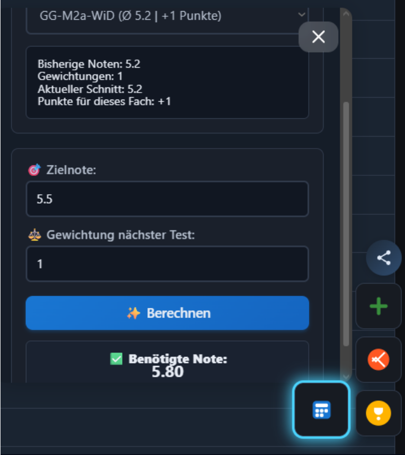
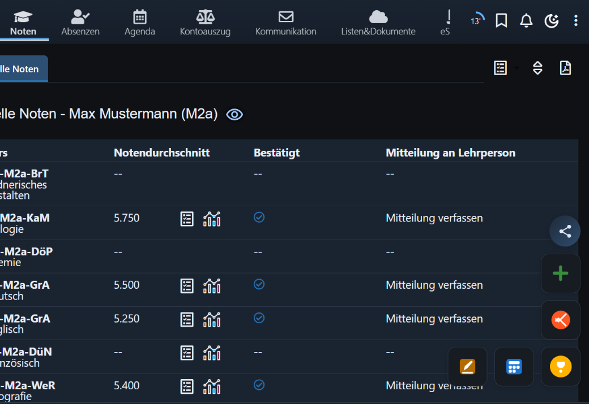
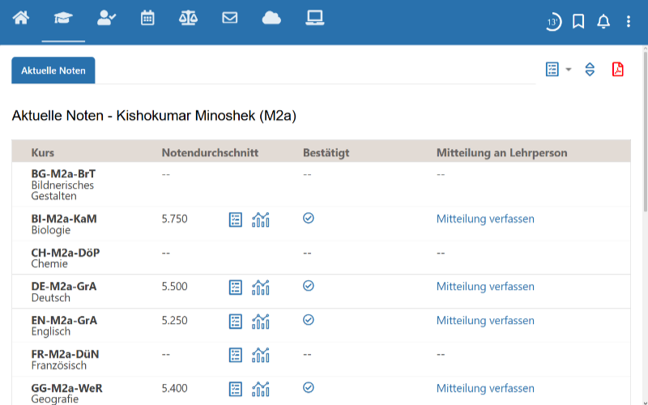

Notenrechner
Füge eine hypothetische Note hinzu und sieh sofort, wie sich dein Durchschnitt verändert. Plane voraus vor der nächsten Prüfung.

Panum Grades fügt einen Notenrechner, Live-Durchschnitte, Pluspunkte, Dark Mode, Achievements und mehr direkt in deine schulNetz-Seite ein. Keine Konten, keine Server, keine Kosten.

Einmal installieren. Alle Tools. Direkt in deiner Notenseite.
Füge eine hypothetische Note hinzu und sieh sofort, wie sich dein Durchschnitt verändert. Plane voraus vor der nächsten Prüfung.

Sieh alle Plus- und Minuspunkte pro Fach auf einen Blick. Fächer ausblenden oder zusammenführen nach Wunsch.
Probiere jede beliebige Notenkombination aus und sieh das Ergebnis, bevor es passiert. «Was wäre, wenn ich eine 5 in Mathe bekomme?»
Sieh, welche Fächer das grösste Verbesserungspotenzial haben — und wo Risiken lauern.
Schalte Abzeichen für gute Ergebnisse, Serien und Fachmeisterschaft frei. Macht Noten ein bisschen spassiger.
Ein vollständiges dunkles Design für schulNetz. Angenehm für die Augen, besonders bei nächtlichen Hausaufgaben.
Verstecke deinen Namen und persönliche Infos mit einem PIN. Perfekt, wenn jemand auf deinen Bildschirm schaut.
Schalte jede einzelne Funktion im Extension-Popup ein oder aus. Behalte nur, was du wirklich brauchst.

Ein vollständiges dunkles Design — nicht nur ein Filter, sondern ein komplett neues Farbschema für schulNetz.
Mit Dark Mode
Keine Anmeldung. Keine Konfiguration. Einfach installieren und loslegen.
Klicke auf «Installieren» für Chrome, Edge oder Firefox. Ein Klick genügt.
Melde dich wie gewohnt bei schulNetz an. Panum aktiviert sich automatisch.
Schwebende Buttons erscheinen auf deiner Notenseite. Klicke auf ein Tool, um es zu öffnen.
Wir wollen deine Daten nicht. Wir können sie buchstäblich nicht einsehen.
Alle Noten, Einstellungen und Berechnungen werden im lokalen Speicher deines Browsers gespeichert. Es gibt keinen Server, keine Datenbank, keine Cloud. Nichts verlässt jemals deinen Computer.
Keine Analytik. Keine Cookies. Keine Telemetrie. Keine Benutzerkonten. Wir wissen nicht, wer du bist — und wollen es auch nicht.
Kein Premium-Abo. Keine Werbung. Keine «Gratis-Testphase». Panum Grades ist komplett kostenlos. War es immer, wird es immer sein.
Jede Zeile Code ist öffentlich auf GitHub. Du kannst den Code lesen, forken, prüfen. Keine versteckten Überraschungen.
Gratis. Lokal. Kein Konto nötig. Wähle einfach deinen Browser.
Panum Grades ist unabhängig und nicht mit schulNetz oder dessen Betreibern verbunden.